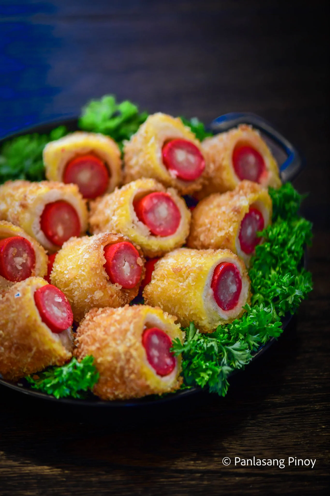

Best served during occations
Ingredients
Idol bites ingredients
Dough:
- 2 cups all-purpose flour
- 1 1/4 cup evaporated milk
- 1 egg
- 2 teaspoon canola oil
- 2 teaspoon baking powder
- 2 teaspoon salt
Egg wash:
- 1 egg
- 1 tablespoon evaporated milk
Idol Chessedog Breadroll ingredients:
- 12 CDO Idol Cheesedog
- 12 sliced tasty bread
- 1/4 cup mayonnaise
- 1 cup panko breadcrumbs
- 2 eggs beaten
- 1 1/2 cups cooking oil
Instructions
- Start making the idol bites by preparing the dough.
Combine flour, evaporated milk, and salt in a bowl. Mix well and set aside.
On another bowl, combine milk, canola oil, and egg.
Mix well until all the ingredients are well blended.
Combine the dry and wet ingredients. Knead the dough until it is smooth and elastic.
Mold into a ball figure. Cover and let it rest for 15 minutes.
- Divide the dough into 2 parts to make it easier to flatten.
Use a rolling pin to flatten the dough and then slice it into small triangles.
- Wrap 2 triangular dough near the two sides of each piece of CDO Idol Cheese Dog.
Do this step until all cheese dogs are done.
- Make an egg wash by mixing the egg wash ingredients. Brush it over the wrapped dough.
- Bake for 12 to 15 minutes at 190C or air fry at 180C for 8 minutes.
Slice in half and arrange on a serving plate. Serve.
- Prepare the Idol Cheese Dog Bread Roll. Flatten each slice of bread using a rolling pin.
Spread mayonnaise on one side. Wrap the bread around each CDO Idol Cheese Dog.
Secure with a toothpick.
- Heat the oil in a small cooking pot.
- While the oil is heating up. Dip the wrapped cheese dog in beaten egg and
then roll it over the Panko breadcrumbs until it gets completely coated.
Deep fry until the breading turns golden brown.
Slice into half and arrange on a serving plate. Share and enjoy!
Share and enjoy!
Return to top
Return to main page